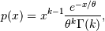
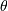
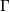
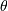
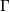

numpy.random.standard_gamma¶
- numpy.random.standard_gamma(shape, size=None)¶
Draw samples from a standard Gamma distribution.
Samples are drawn from a Gamma distribution with specified parameters, shape (sometimes designated “k”) and scale=1.
Parameters: shape : float
Parameter, should be > 0.
size : int or tuple of ints, optional
Output shape. If the given shape is, e.g., (m, n, k), then m * n * k samples are drawn. Default is None, in which case a single value is returned.
Returns: samples : ndarray or scalar
The drawn samples.
See also
- scipy.stats.distributions.gamma
- probability density function, distribution or cumulative density function, etc.
Notes
The probability density for the Gamma distribution is

where
 is the shape and  the scale,
and  is the Gamma function.
is the shape and  the scale,
and  is the Gamma function.The Gamma distribution is often used to model the times to failure of electronic components, and arises naturally in processes for which the waiting times between Poisson distributed events are relevant.
References
[R265] Weisstein, Eric W. “Gamma Distribution.” From MathWorld–A Wolfram Web Resource. http://mathworld.wolfram.com/GammaDistribution.html [R266] Wikipedia, “Gamma-distribution”, http://en.wikipedia.org/wiki/Gamma-distribution Examples
Draw samples from the distribution:
>>> shape, scale = 2., 1. # mean and width >>> s = np.random.standard_gamma(shape, 1000000)
Display the histogram of the samples, along with the probability density function:
>>> import matplotlib.pyplot as plt >>> import scipy.special as sps >>> count, bins, ignored = plt.hist(s, 50, normed=True) >>> y = bins**(shape-1) * ((np.exp(-bins/scale))/ \ ... (sps.gamma(shape) * scale**shape)) >>> plt.plot(bins, y, linewidth=2, color='r') >>> plt.show()